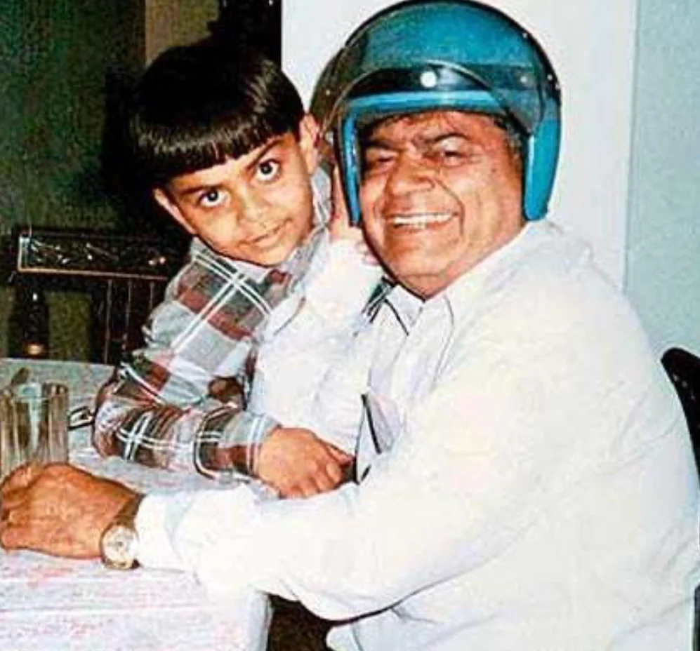
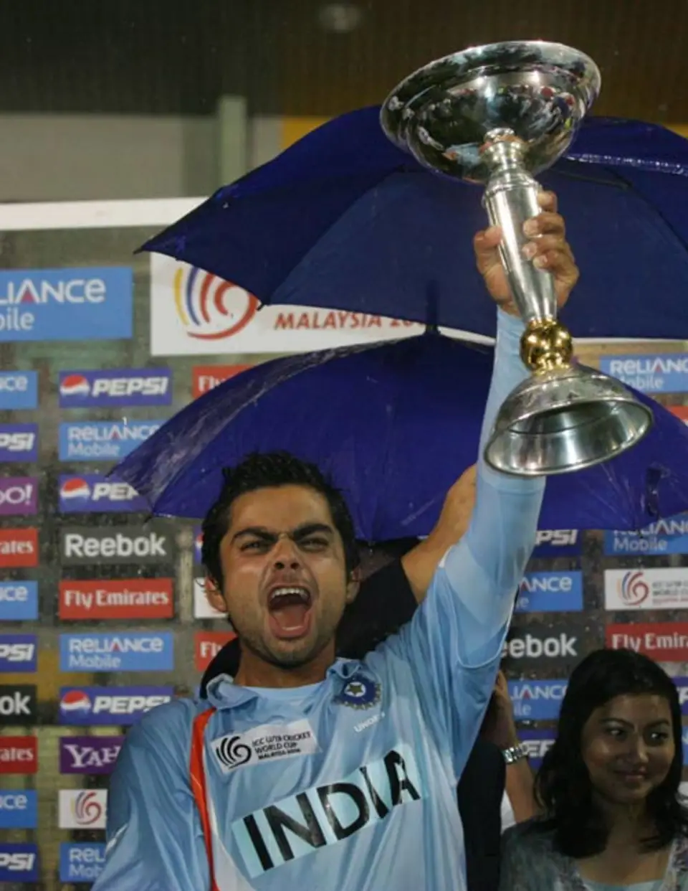
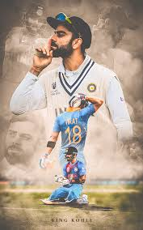
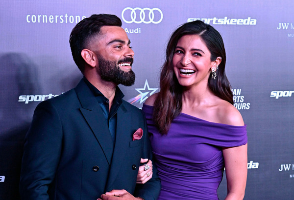
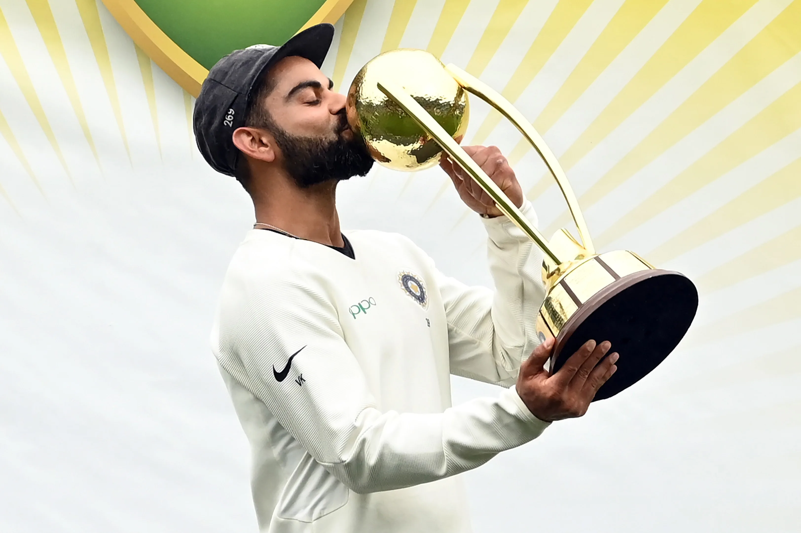
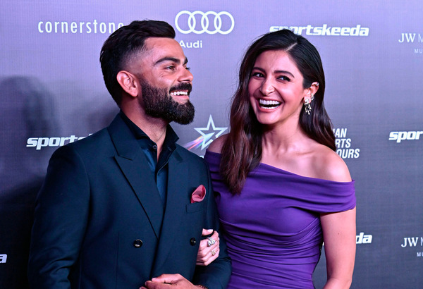
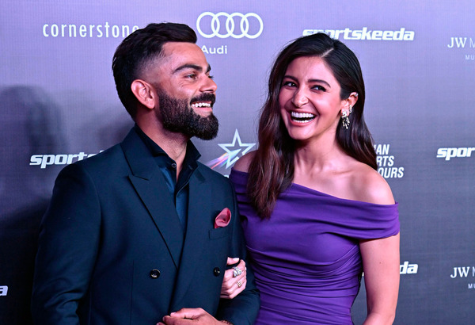

Virat Kohli, an iconic Indian cricketer, is celebrated for his aggressive playing style, remarkable consistency, and record-breaking achievements. Known for his fitness and commitment, Kohli has led India to numerous victories, particularly in limited-overs formats. His passion, discipline, and exemplary batting across formats make him one of cricket’s modern greats.
CONTENTS
ABOUT
CHILDHOOD
UNDER - 19 JOURNEY
INTERNATIONAL CARRIER
MARTIAL LIFE
ACHIEVEMENTS
THE PRIDE RETIREMENT
ABOUT
<
Virat Kohli is one of India's most celebrated cricketers, known for his intense passion, exceptional batting skills, and leadership abilities. Born on November 5, 1988, in Delhi, India, Kohli showed early promise as a cricketer, joining the West Delhi Cricket Academy at the age of nine.He made his first-class debut for Delhi in 2006, and shortly after, he led the India U-19 team to victory in the ICC U-19 Cricket World Cup in 2008.
CHILDHOOD

Virat Kohli had a close and deeply influential relationship with his father, Prem Kohli, who played a crucial role in shaping his early years in cricket. Growing up in Delhi, Virat was encouraged by his father to pursue cricket seriously. Prem Kohli worked as a criminal lawyer, and despite not being wealthy, he made every possible sacrifice to support Virat's dreams. From enrolling him in the **West Delhi Cricket Academy** to attending every match he played, his father was a constant presence in his life and career.
One poignant memory that deeply affected Virat was the loss of his father when he was only 18 years old. In 2006, while he was playing a Ranji Trophy match for Delhi, his father passed away suddenly due to a stroke. Despite this immense personal tragedy, Virat showed incredible dedication; he returned to the field the next morning and scored 90 runs to save his team from a difficult position. This incident became a defining moment in his career, showcasing his resilience and determination.
Kohli often recalls his father’s influence, describing him as a “self-made man” who instilled values of hard work, discipline, and honesty. His father’s memory has served as a source of motivation throughout his career, and Virat has said he strives to make his father proud with every achievement on and off the field.
U-19 JOURNEY

This table highlights Kohli's consistency, leadership, and his strong performances, especially during the 2008 U-19 World Cup, which marked the beginning of his journey to international cricket fame
ASPECT
DETAILS
Debuit in U-19
2006 (played for India U-19 at 17 years old)
Captaincy
Led the India U-19 team in the 2008 ICC U-19 Cricket World Cup held in Malaysia
Role
Right-handed batsman, occasional right-arm medium pacer
Batting Average in U-19
47.67 (in Youth ODIs)
Total U-19 Youth ODIs
17 matches
Runs Scored
758 runs
Highest Score
146
50s/100s in Youth ODIs
5 half-centuries and 2 centuries
2008 U-19 World Cup Performance
Scored 235 runs in 6 matches at an average of 47.00
U-19 World Cup Achievement
Led India U-19 to World Cup victory in 2008, defeating South Africa in the final
INTERNATIONAL-CARRIER

Virat's international career is one of the most successful and influential in modern cricket, characterized by his aggressive style, record-breaking performances, and leadership qualities. Here’s a breakdown of his career milestones and achievements:Early International Debut and Rise (2008 - 2012)
ODI Debut: August 18, 2008, against Sri Lanka.
Initially selected as an opening batsman due to injuries in the squad.
Showed early signs of consistency, earning his place in the Indian lineup.
First ODI Century: Scored his maiden century against Sri Lanka in 2009, showcasing his talent as a reliable batsman.
T20I Debut: June 12, 2010, against Zimbabwe.
Test Debut: June 20, 2011, against the West Indies.
Struggled initially but soon adjusted to Test cricket, scoring his maiden Test century in 2012 against Australia.
Records and Key Stats:
Format
Matches
Runs
Average
Centuries
Half-centuries
Highest Score
Test
111
8,676+
49.29+
29+
29+
254*
ODI
279
15000+
57.38+
50
70
183
T20I
115
4,008+
52.47+
1
37
122*
IPl
216
7000+
50.89
5
36
113*
Virat Kohli’s career is a testament to discipline, passion, and resilience. His combination of technical skill, mental toughness, and leadership has made him one of cricket's modern greats.
MARTIAL LIFE:

Virat Kohli and Anushka Sharma, one of India’s most beloved celebrity couples, tied the knot in a beautiful and private ceremony on December 11, 2017, in Tuscany, Italy. Both Kohli, the cricket superstar, and Sharma, a leading Bollywood actress, had kept their relationship largely private before the marriage, with only occasional appearances together in public.
Relationship and Engagement
First Meeting: They reportedly met for the first time in 2013 during the shooting of a commercial for a shampoo brand. The on-screen chemistry quickly translated into a close bond off-screen, and the two soon began dating.
Public Appearances: Despite keeping their relationship private initially, Kohli and Sharma were often spotted together at cricket matches and public events. Their relationship was highly covered by the media, and fans adored them as a couple.
Engagement Rumors: Although speculations about their engagement arose multiple times, they only confirmed their commitment just before their wedding.
Life Together
Family: On January 11, 2021, Virat and Anushka welcomed their first child, a daughter named Vamika. The couple requested privacy for their daughter, refraining from revealing her face in public.
Supportive Relationship: Both have supported each other’s careers. Anushka is often seen cheering for Virat at cricket matches, and Kohli is vocal about his admiration for her work in cinema
Shared Ventures: In addition to their individual careers, they have collaborated on initiatives, including social causes and wellness ventures like Nueva, Kohli's restaurant.
ACHIEVEMENTS

Virat Kohli has made an extraordinary impact on cricket, both for India and internationally, with numerous achievements across his career:
International Cricket Records :
Fastest Century in ODIs by an Indian: Kohli scored his fastest ODI century off 52 balls against Australia in 2013.
Highest Number of Centuries in Chases: Known as one of the best chasers in the game, Kohli has the record for the highest number of centuries while chasing targets in ODIs.
Fastest to 8,000, 9,000, 10,000, 11,000, and 12,000 ODI Runs: Kohli broke these records in ODIs, achieving each milestone faster than any other player.
Captaincy Achievements :
Most Successful Indian Test Captain: Kohli led India to 40 Test wins, making him the most successful Indian Test captain.
ICC Team of the Year Captain: Under Kohli’s captaincy, India rose to the top of the ICC Test rankings and maintained the position for an extended period.
Successful Overseas Test Series: Kohli led India to historic Test series victories in Australia (2018-19), making India the first Asian team to win a Test series Down Under.
T20 and IPL Success
Leading Run-Scorer in IPL History: Kohli is the highest run-scorer in the Indian Premier League (IPL), with several match-winning performances.
Record for Most Runs in a Single IPL Season: In 2016, he scored 973 runs in a single IPL season, a record yet to be broken.
Milestones and Records in ODIs and Tests
Double Centuries in Tests: Kohli has the record for the most double centuries by an Indian in Test cricket.
First Batsman to Score 20,000 International Runs in a Decade: Kohli achieved this feat across all formats, establishing himself as one of the most consistent players in cricket.
THE PRIDE RETIREMENT
Virat Kohli announced his retirement from T20 international cricket after India’s victory over South Africa in the 2024 ICC T20 World Cup final. He revealed his decision during the post-match presentation, noting that he felt it was time to make way for the next generation of Indian cricketers in the T20 format. Kohli played an instrumental role in India’s win, scoring a crucial 76 off 59 balls, which earned him the Player of the Match award. Kohli, who debuted in T20Is in 2010, wrapped up his T20I career with 125 matches and 4,188 runs, including 38 half-centuries and one century


 
